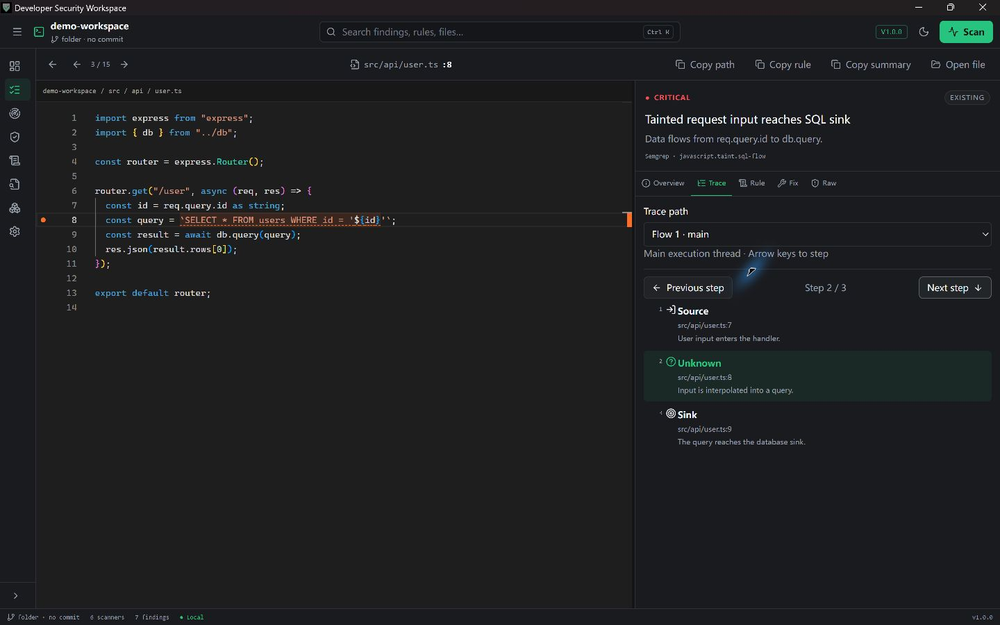
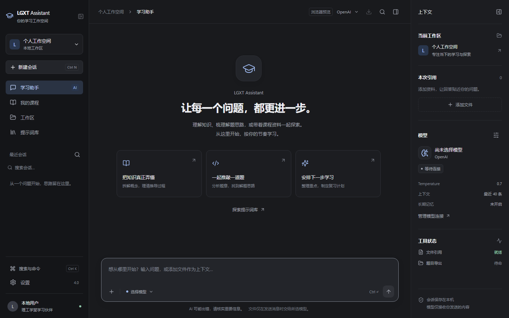
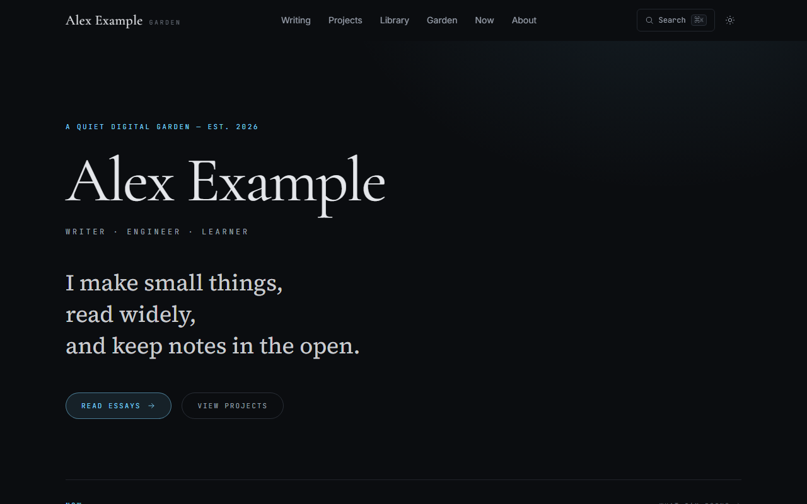
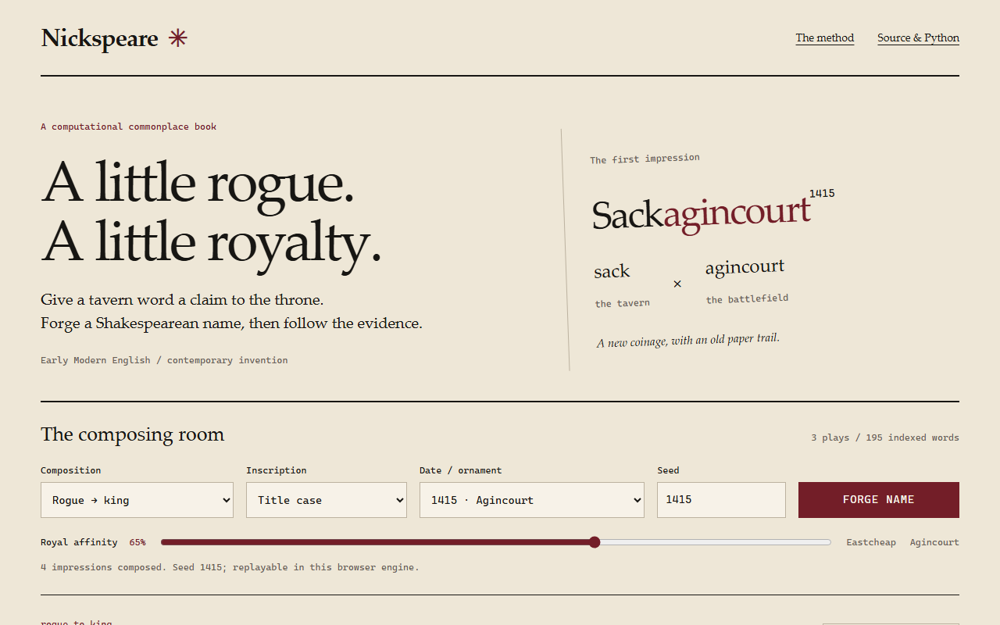
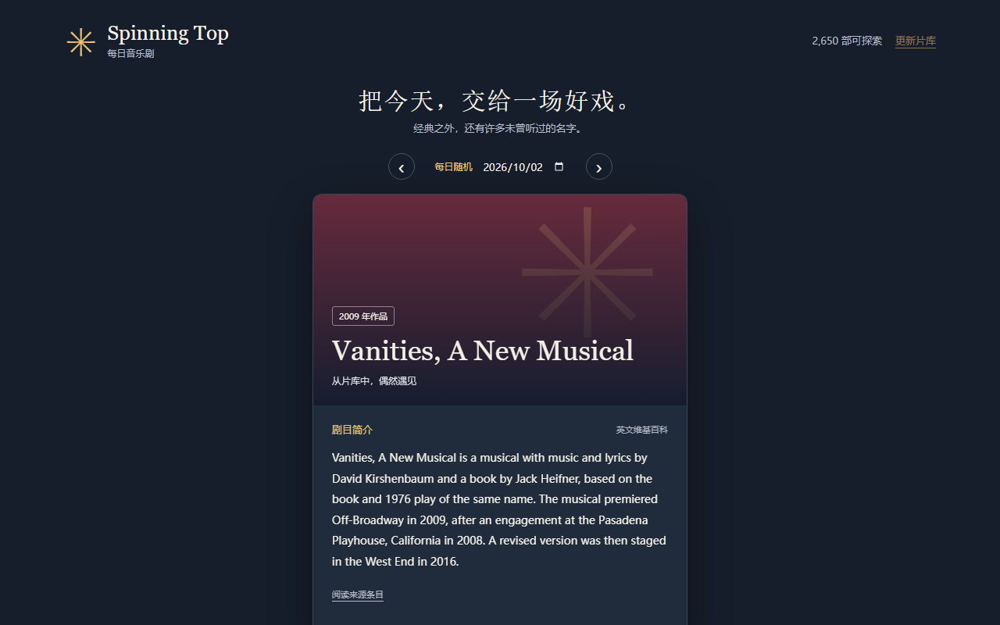
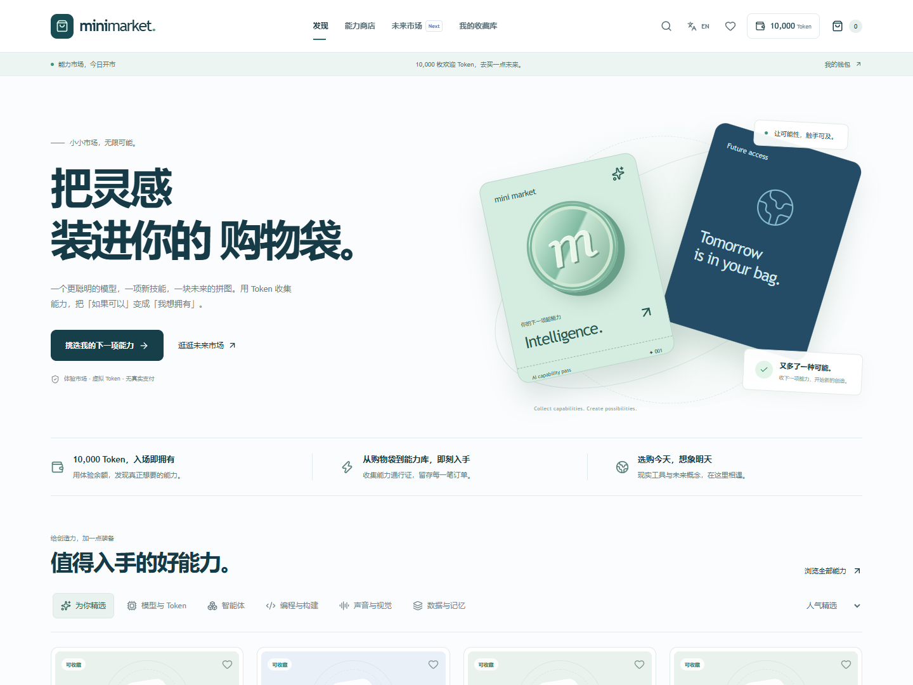
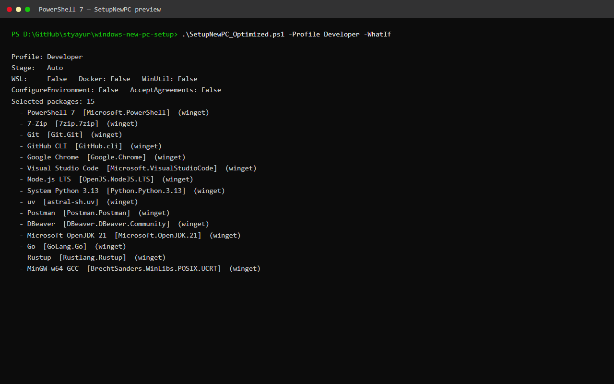

Developer Security Workspace
Local-first SARIF vulnerability explorer and finding debugger.
Rust · Tauri · SQLite
Open Source Studio
Building local-first tools, knowledge systems and developer software.
Desktop/web hybrids, Rust and Python tooling, information exploration, and practical developer utilities — built as real products, explicit about boundaries.

Local-first SARIF vulnerability explorer and finding debugger.
Rust · Tauri · SQLite

Local-first learning assistant for courses, assignments and study workflows.
Python · Windows · Android





Previewable Windows 11 provisioning with PowerShell and WinGet.
PowerShell
Engineering interests:
Technical articles, systems notes and marginalia live in the digital garden.